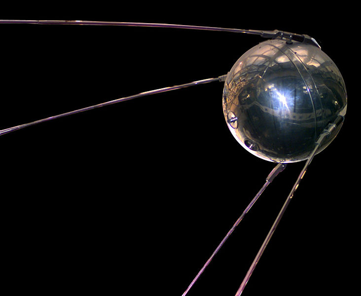
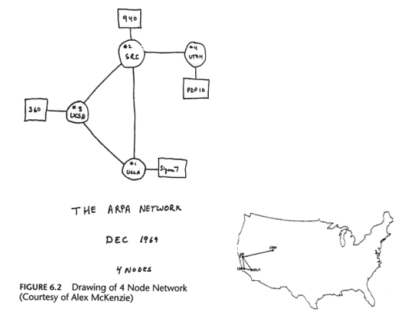
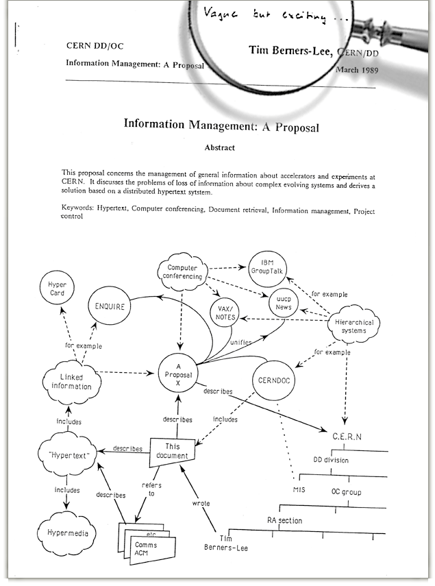
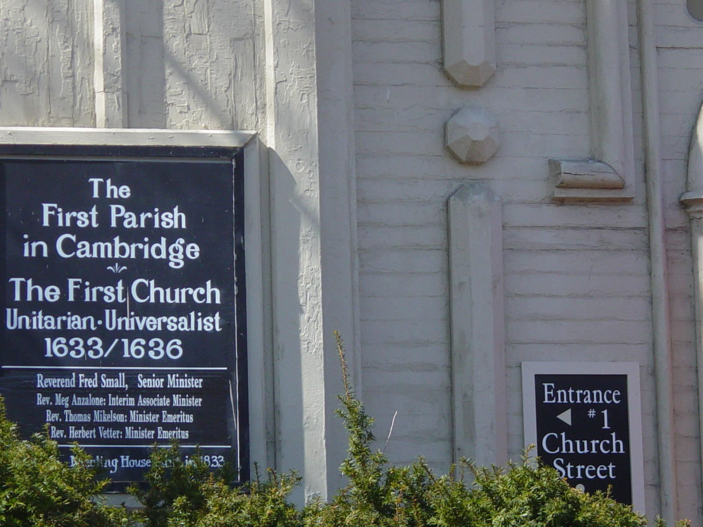

Ringraziamenti
- Questa presentazione utilizza anche materiale
proveniente da:
- presentazioni e articoli scritti da F. R. A.
(Bob) Hopgood, Visiting Professor, School of
Technology, Oxford Brookes University
- pagine Web (Wikipedia e altre)
- Il materiale di questa presentazione può
essere riutilizzato nel rispetto delle leggi sul
copyright e delle regole del W3C
Contenuto
- Le radici del Web
- Tim Berners-Lee
- Le idee iniziali e il contesto
- La nascita del Web
- Qualche curiosità
Il World Wide Web
-
Non più:
-
L'ho sentito in televisione
-
ma:
-
L'ho trovato sul Web
Lo cerco sul Web
-
o ancora:
-
Lo metto sul Web
-
e in futuro:
-
…
L’invenzione del web
-
Non un Eureka
-
non la mitica mela di Newton
- la potenza di combinare le idee in modo
libero ("weblike") ...
- risposta a una sfida
- combinazione di idee e realizzazioni da parte anche
di molti altri
- finalmente un' idea nuova, stimolata da un
ambiente di ricerca di altissimo livello: combinare
in modo libero le idee
Un processo di accrescimento, non la soluzione
lineare di una serie di problemi ben definiti.
Internet
Tutto comincia guardando alla luna…
…e con la gara per lo spazio

4 ottobre 1957: lancio dello Sputnik
ARPANET…
- 4 ottobre 1957: lancio dello Sputnik
- 7 febbraio 1958: il dipartimento della difesa USA
avvia il progetto ARPA (Advanced Research
Project Agency per: “ provide within the Department
of Defense an agency for the direction and performance of
certain advanced research and development projects
”
- 1962: J.C.R. Licklider capo di ARPA per
migliorare l' uso militare della computer technology
- 1969: il primo collegamento: UCLA-Stanford
- 1970: le prime LAN (ethernet a Xerox PARC)
- 1972: prima dimostrazione pubblica di
ARPANET: la prima rete operativa basata sulla
tecnologia della commutazione di pacchetto (packet
switching) invece che sulla commutazione di
circuito.
… nel 1969…

- UCLA: Network Measurement Center
- SRI: Network Information Center
- UCSB: Culler-Fried interactive mathematics
- Utah: 3D graphics
…Ray Tomlinson: la magica @…
…verso TCP/IP…
- 1973: Kahn e Cerf
- iniziano a lavorare su modelli aperti per
l'interconnessione per progettare la generazione
successiva dei protocolli per ARPANET
- le differenze di protocollo vengono mascherate
usando un internetwork protocol comune
- responsabilità dell'affidabilità
della trasmissione dei messaggi demandata agli
host
- ruolo della rete ridotto al minimo (vedi
IETF RFC 1149 del 1990-04-01:
A Standard for the Transmission of IP Datagrams
on Avian Carriers) [local file rfc1149]
- Dicembre 1974: prima specifica di TCP
(Transfer Control Protocol) per internetworking
…e Internet
- luglio 1977: dimostrazione a grande scala di
internetworking mediante ARPANET
-
ISO/OSI (Open System Interconnection)
- Internet al CERN
- CERNET: protocolli definiti su base locale
- 1981-83: IP per comunicazione via satellite (RAL,
CERN e Pisa)
- 1983: Ethernet al CERN
- 1984: implementazione pilota di TCP/IP
- 1989: CERN connesso a Internet
- 1990: CERN più grosso sito Internet in
Europa
Nel 1989 Tim Berners-Lee può creare il World Wide
Web basato su distributed computing e
Internet.
SGML (breve storia del markup)
Il text retrieval
- La Naturalis Historia di Plinio il Vecchio
- In 37 libri
- Pubblicata nel 77 d.C.
- Il primo libro, pubblicato nel 79 d.C. dal nipote
Plinio il Giovane, contiene il sommario dei libri
successivi ed un elenco delle fonti per
ciascun libro
-
I primi metadati?
In principio fu lo scriptorium…
stat rosa pristina nomine, nomina nuda tenemus
…e i manoscritti
 Bibbia, in
latino.
Bibbia, in
latino.
Manoscritto in pergamena (prima metà del sec.
XIII)
Poi venne Gutenberg…

(http://upload.wikimedia.org/wikipedia/commons/b/b0/Gutenberg_Bible.jpg)
… e nacque il markup
- Il temine deriva dalla pratica dell' editoria
tradizionale
- Il marking up dei manoscritti consiste nell'
aggiungere istruzioni simboliche a margine dei
manoscritti
- A cura di personale specializzato e correttori di
bozze

|
Paragrafo
|
|
Diminuire lo spazio orizzontale
|
|
Inserire il testo a margine
|
|
|
In maiuscolo
|

|
Spostare a sinistra
|
|
Spostare a destra
|
Nasce il "generic coding"
-
William Tunnicliffe della Graphic
Communications Association (GCA)
- compagnia privata
- edizione delle pagine gialle
- impaginazione ex novo ogni anno
- presentazione dal titolo: "The Separation of
Information Content of Documents from their
Format" ad un meeting del Canadian Government
Printing Office nel settembre 1967
- GCA inizia il progetto GenCode
- markup generalizzato basato sulla struttura
gerarchica del documento
- tentativo di standardizzazione di un insieme di
elementi comuni
GML
- Charles Goldfarb, Edward
Mosher e Raymon
Lorie in IBM iniziano lo
sviluppo di Generalized Markup Language (GML)
- Possibilità di definire il proprio markup
- Possibilità di validare il documento rispetto
ad una Document Type Definition
- Per la prima volta tagging gerarchico con apertura e
chiusura
- Quali tag sono ammessi e dove
- I tag possono essere omessi se la loro posizione
è ovvia
GML: un esempio
:book.
:body.
:h1.Introduzione
:p.Il GML supportava contenitori gerarchici, come
:ol.
:li.Liste ordinate (come questa),
:li.Liste non ordinate, e
:li.Liste di definizione
:eol.
:p.e strutture semplici
:p.È stato possibile omettere i tag di chiusura
per gli elementi "h1" e "p", grazie al principio di minimalizzazione.
SGML
- Vedi Storia
- 1978: ANSI inizia il lavoro su uno standard per la
descrizione di testi basata su GML (con il supporto di
GCA)
- Tunnicliffe convince la US Navy a standardizzarsi
sull' initial SGML Draft
- 1983: Working Draft accettato da DoD e IRS (US
Internal Revenue Service)
- 1984: Passaggio all' ISO
- 1985: Draft International Standard (DIS)
- Anders Berglund al CERN implementa il DIS e usa SGML
per il testo dell' IS
- 1986: SGML (ISO 8879)
-
SGML declaration: definisce i delimitatori
per il markup
-
Document Type Definition: struttura e
regole per il markup del documento
-
Documento: fa riferimento ai due
precedenti, input manuale, tagging non strettamente
vincolante, parser più complesso
SGML al CERN
<BODY>
<H1>Introduction
This manual describes how to build a distributed system using the
Remote Procedure Call system developed in the Online Group
of the DD Division of CERN, the European Particle Physics Laboratory.
<h2> The system
The remote procedure call product consists of two essential parts:
an RPC compiler which is used during development of an application,
and the RPC run time system, which is part of the run time code.
Target systems supported are
<ul>
<li>VAX/VMS,
<li>Unix (Berkley 4.3 or Ultrix or equivalent)
<li>stand-alone M680x0 (MoniCa) systems (Valet-Plus, etc)
<li>stand-alone M6809 systems
<li>M680x0 systems running RMS68K
<li>M680x0 systems running OS9
<li>The IBM-PC running TurboPascal or Turbo-C
<li>The Macintosh running TurboPascal or MPW
</ul>
Tipi di markup
James H. Coombs, Allen H. Renear, Steven J. DeRose:
Markup Systems and the Future of Scholarly Text
Processing (Communications of the ACM 30, November
1987; 933-47)
- Punctuational
- molte differenze stilistiche, ambiguo per il text
formatting
-
Presentational
- spaziatura orizzontale e verticale, interruzioni
di pagina, numerazione dei paragrafi
- in genere affidata al text formatter per le parti
ripetitive, ma integrata da modifiche "locali"
-
Procedural
- comandi che specificano come formattare il testo,
es.
.sk 3 a; .in +10 -10; .ls 0; .cp 2;
- tipicamente associato ad un formattatore batch
(nroff/troff, TeX)
- in molti sistemi coesistono comandi di editing
"presentational" e "dot commands"
-
Descriptive
- gli autori identificano il tipo di
porzioni di testo
- per preparare la versione per la presentazione il
text formatter legge un insieme di regole scritte in
un sistema di "procedural markup"
- presentazioni diverse si ottengono modificando le
regole
- la metafora dello style sheet orienta gli autori
verso la presentazione piuttosto che verso il ruolo
delle entità nel documento
- Referential
- fa riferimento a entità esterne al
documento
- viene sostituito da queste entità nella
fase di processing
- Metamarkup
- controllo dell' interpretazione del markup
- estensione del vocabolario del markup descrittivo
Hypertext
Vannevar Bush
- 1927: computer analogico per la risoluzione di
equazioni
- 1930: Analizzatore differenziale (meccanico)
- 1935: Analizzatore differenziale
(elettro-meccanico):
- 100 tonnellate,
- 2000 valvole,
- 150 motori,
- oltre 300 Km di cavi.
- Utilizzato nel progetto Manhattan.
- circa 1940: Rapid Selector, memorizzazione di
microfilm e information retrieval
- 1945: As We May Think (in Atlantic
Monthly, Luglio 1945))
Il Memex
A memex is a device in which an individual stores his
books, records and communications and which is
mechanized so that it may be consulted with exceeding
speed and flexibility. It is an enlarged
intimate supplement to his memory.
The memex "affords an immediate step, however, to
associative indexing, the basic idea of which
is a provision whereby any item may be caused at will
to select immediately and automatically another. This
is the essential feature of the memex. The process
of tying two items together is the important
thing."
(Una riproduzione dell' articolo a: http://www.multimedialab.be/doc/citations/bush_aswemaythink.pdf
o copia locale a: bush_aswemaythink)
Douglas (Doug) Englebart
- Sempre in anticipo sui tempi
- Nel 1960 inventa il mouse
- "augmenting human intellect"
- Tra il 1960 e il 1970 sviluppa il sistema
NLS (oNLine
System), prima implementazione dell'
ipertesto.
- NLS è ilprimo sistema che utilizza il
mouse
- Famosa la demo
del 1968 alla Fall Joint Computer Conference in San
Francisco
Ted Nelson e la definizione di ipertesto (1965)
 A
body of written or pictorial material interconnected in a
complex way that it could not be conveniently represented
on paper. It may contain summaries or maps of its
contents and their interrelations; it may contain
annotations, additions and footnotes from scholars who
have examined it.
A
body of written or pictorial material interconnected in a
complex way that it could not be conveniently represented
on paper. It may contain summaries or maps of its
contents and their interrelations; it may contain
annotations, additions and footnotes from scholars who
have examined it.
Per saperne di più su ted Nelson:
http://ted.hyperland.com/,
http://xanadu.com.au/ted/
Progetto Xanadu (1965-1999):
- Pay-per-link
- Bi-directional links
- Universo dei documenti
- Progetto durato oltre 32 anni
Talvolta i risultati migliori si ottengono
ridimensionando gli obiettivi
Tim e Ted si incontrano nel 1992, e Tim salda il debito
per la copia di Literary Machines (pubblicato
nel 1981)
Tim Berners-Lee
Brevi note biografiche
-
Biografia
di Tim
- nato a Londra, l' 8 giugno 1955
- figlio di Mary Lee e Conway Berners-Lee, due
matematici che lavoravano nel gruppo che sviluppava il
Ferranti Mark 1
- 1973-76: laurea in fisica (Queens College, Oxford)
- 1980: breve lavoro di consulenza al CERN
- 1984: di nuovo al CERN
- 1989: presenta una proposta di progetto
- 1990: scrive il brimo browser
- 1994: fonda il World Wide Web Consortium
Il tarlo del meccanismo associativo
Una volta discusse con il padre come rendere intuitivo il
computer, e metterlo in grado di realizzare le
associazioni tipiche della mente umana
Nel 1980, durante il primo soggiorno al CERN, matura il
concetto:
Suppose all the information stored on computers
everywhere were linked. Suppose I could program my
computer to create a space in which anything could be
linked to anything.
Qui puoi trovare tutto ...
I suoi genitori avevano una copia del libro di epoca
Vittoriana. Ne aveva ricevuta un' altra copia in regalo
dal suo padrino.
Staying in a House without Staff
It is for the guest to be as unobtrusively helpful to
host and hostess. The simplest thing is to ask exactly
how you may do this and also remember that there are
times when even the most saught-after guest may get in
the way of the routine domestic chores - it is often
easier, for example, to opt for breakfast in bed while
the hostess copes with the early morning routine.
In any household (even that of a millionaire), the
thoughtful guest does not make free with the
establishment's drinks, cigarettes, postal and
telephone facilities, nor does he or she demand
numerous additional services from the staff.
La sfida dei gruppi di lavoro al CERN
- Grossi gruppi distribuiti
- Progettazione e realizzazione di apparecchiature
complesse
- Progetti di lunga durata
- Analisi distribuita dei risultati
- Le difficoltà negli anni 80
- Varietà di computer e di sistemi di rete
- Accesso in modo diverso ai vari tipi di
informazione
- Grossi investimenti in termini di energie umane
- Frustrazione e inefficienza
- Una sfida per Tim Berners-Lee: come
consentire l' accesso alle varie fonti di informazione in
maniera semplice e coerente
Il primo periodo al CERN (1980)
Programmatore a contratto
- Difficoltà nel mantenere traccia delle
persone, dei programmi, dei vari sistemi
- Scrive, nel tempo libero, un programma per uso
personale: "Enquire-Within-Upon-Everything"
- Nodi e link
- Per creare un nuovo nodo occorre creare un link che
parte da un nodo già esistente
- Tutti i nodi possono essere collegati da link
- Occorre specificare il tipo di link
- Ogni nodo ha un titolo, un tipo, e
una lista di link tipati bidirezionali
- "ENQUIRE" era scritto in Pascal e girava su una Norsk
Data con sistema operativo SINTRAN-III
- Non usato su vasta scala
- Versione originale andata perduta
Il secondo periodo al CERN (1984-89)
- Scrive Tangle
- Scrive una procedura RPC
- Cerca di ricreare Enquire sul suo portatile (solo
link interni)
- 1989: scrive la proposta…
“Vague but exciting”
- Marzo 1989: Information Management: A Proposal
- Il suo capo, Mike Sendall, la giudica:
“Vague, but
exciting”, e la proposta non riceve risposta
- Maggio 1990: ripresenta la proposta, di nuovo senza
successo
- Compare sul mercato la NEXT, con caratteristiche
interessanti per sviluppare il progetto
- TBL chiede a Mike Sendall di acquistargliene una,
e…
- …Mike Sendall acconsente, e gli propone di
utilizzarla per sviluppare il suo progetto
…e HTML
- Nel 1989 Tim Berners-Lee propone la condivisione
di documenti
- Anders Berglund consiglia di adottare lo standard
SGML
- Viene definita una semplice DTD SGML, basata
sulla prima DTD pubblica, scritta da Charles Goldfarb,
sviluppandone una versione ipertestuale chiamata HTML
-
HTML nasce in tempi brevissimi
Il terzo periodo al CERN (1989-1994)
- La proposta del marzo 1989: "Information
Management: A Proposal" contiene i tre elementi
fondamentali:
-
universal resource locator
-
protocollo per il fetch dei documenti
-
document mark-up
- Implementa su una macchina Next il primo World Wide Web
server, “httpd”, e il primo client,
“WorldWideWeb” un
what-you-see-is-what-you-get hypertext
browser/editor
- “ designed to allow people to work
together by combining their knowledge in
a web of hypertext documents ”
-
ottobre 1990: inizio dello sviluppo
-
dicembre 1990: il programma
“WorldWideWeb” reso disponibile
al CERN
-
estate 1991: il programma
“WorldWideWeb” reso disponibile
su Internet
- 1991-93: Continua la progettazione e lo sviluppo del
Web al CERN
- Raffinamento delle specifiche iniziali di URI,
HTTP e HTML
Il primo Web Server
La NeXTcube usata da Tim Berners-Lee al CERN.
Diventa il primo Web Server il 30 aprile 1993
L’approccio
Dalla fisica:
Trovate le regole semplici che descrivono il
comportamento di oggetti semplici e piccoli
...
... si ha la chiave per spiegare il comportamento di
sistemi molto complessi e grandi
Definire le poche e semplici regole comuni dei
protocolli che permettono ai computer di
parlarsi tra di loro.
Tre concetti essenziali
-
URI
-
-
Universal Resource Identifier: cosa
significa come indirizzo
- È l' innovazione più
fondamentale del Web
- Qualunque programma Web lo utilizza quando segue
un link
- Una volta che un documento ha un URI, può
essere memorizzato su un server e
ritrovato da un browser
- Non esiste un archivio centralizzato di URI.
-
HTTP
-
-
Hypertext Transfer Protocol: la sequenza
con cui i computer interagiscono e si scambiano
informazioni
- La format negotiation permette la
coesistenza di tutti i tipi di formato
-
HTML
-
-
Hypertext Markup Language: se due computer
usano lo stesso software per rappresentare i dati,
possono scambiarli in modo nativo, altrimenti, li
possono tradurre in HTML
- HTML descrive la struttura, non la
presentazione
Tutto qui?
- Quando qualcuno, da qualche parte, rende disponibile
un' informazione, questa deve essere accessibile da
chiunque, con qualsiasi computer, in
qualsiasi paese (a meno di problemi di
autorizzazione)
- L' ipertesto globale era una prospettiva del
tutto nuova: accesso mediante navigazione
- La possibilità di puntare a qualsiasi risorsa
permette di implementare il meccanismo
associativo
- Il Web è uno spazio informativo universale, in
cui ognuno può accedere all' informazione e
modificarla (browser/editor)
Quello che fa la differenza…
- Ambiente totalmente decentralizzato
-
Interoperabilità
- Non autorità, ma
autorevolezza
Qualche curiosità
Come nasce il nome World Wide Web
-
Mesh o Information Mesh
-
troppo simile a mess
-
Mine of Information (MOI)
-
troppo egocentrico
-
The Information Mine (TIM)
-
anche più egocentrico!!
-
World Wide Web
-
nonostante molti pareri contrari
URI/URL
- Universal Resource Identifier
- Nel meeting IETF (1992) vengono sollevate opposizioni
al termine Universal
- Pragmaticamente, accetta Uniform invece di
Universal, e quindi nasce: Uniform Resource
Locator (URL)
Il rapporto con l’ accademia: Hypertext91

- Il lavoro viene rifiutato
- Almeno uno dei revisori afferma che:
il sistema proposto viola i principi architetturali
su cui si basano tutti i sistemi ipertestuali
- Riesce a ottenere la possibilità di dare una
dimostrazione
- Non tutti comprendono il fattore di scala
L'importanza del contesto

“ The people who built the Internet and Web have a
real appreciation of the value of individuals
and the value of systems in which individuals play their
role, with both a firm sense of their own identity and a
firm sense of some common good.
[…]

I was very lucky, in working at CERN, to be in an
environment that Unitarian
Universalists and physicists would equally
appreciate: one of mutual respect, and of
building something very great through collective
effort that was well beyond the means of any one
person - without a huge bureaucratic
regime.
[…]
The system produced a weird and wonderful machine, which
needed care to maintain, but could take advantage of the
ingenuity, inspiration, and
intuition of individuals in a special way.
That, from the start, has been my goal for the World
Wide Web. ”
(Tim Berners-Lee - Weaving the Web, p. 208-209)
Tim e il successo economico
People have sometimes asked me whether I am upset that I
have not made a lot of money from the Web. In fact, I
made some conscious decisions about which way to take my
life. These I would not change - though I am making no
comment on what I might do in the future. What does
distress me, though, is how important a question it seems
to be to some. This happens mostly in America, not
Europe. What is maddening is the terrible notion that
a person's value depends on how important and financially
successful they are, and that is measured in terms of
money. That suggests disrespects for the researchers
across the globe developing ideas for the next leaps in
science and technology.
Core in my upbringing was a value system that put
monetary gain well in its place, behind things like
doing what I really want to do. To use net worth as
a criterion by which judge people is to set out our
children's sights on cash rather than on things that will
actually make them happy.
It can be occasionally frustrating to think about things
my family could have done with a lot of money. But in
general I'm fairly happy to let other people be in the
Royal Family role (as it were), as long as they don't
abuse the power they have as a result. It's not as
if I can just make decisions that change the Web ... but
I can try to get an entire industry to do it. My priority
is to see the Web develop in a way that will hold us in
good stead for a long time. If someone tries to
monopolize the Web - by, for example, pushing a
proprietary variation of network protocols - they're in
for fight.
[da Weaving the Web, p. 107-108]
Conclusioni
- Il World Wide Web
- Un' invenzione a portata di mano
- Frutto del lavoro di tutti (come afferma
lo stesso Tim)
- Ancora molti margini di evoluzione (leading
the Web to its full potential)
- L' importanza del contesto
- Motivazioni tecniche e ideali
Sono orgoglioso di ...

Happy birthday, W3C

Tim Berners-Lee e Oreste Signore


{kind=link}
{kind=link}
{kind=link}
{kind=link}
{kind=link}